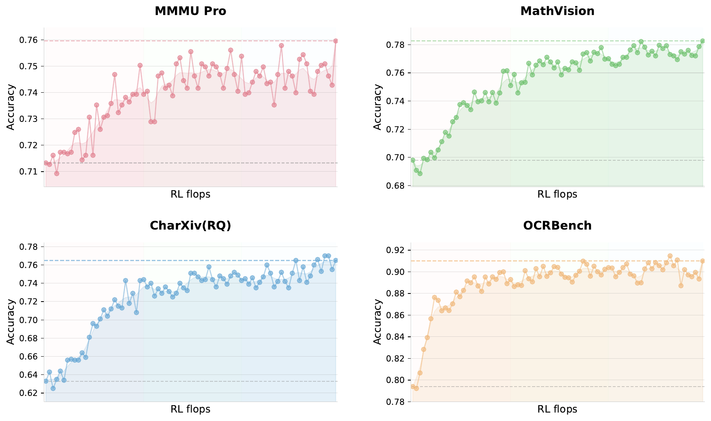
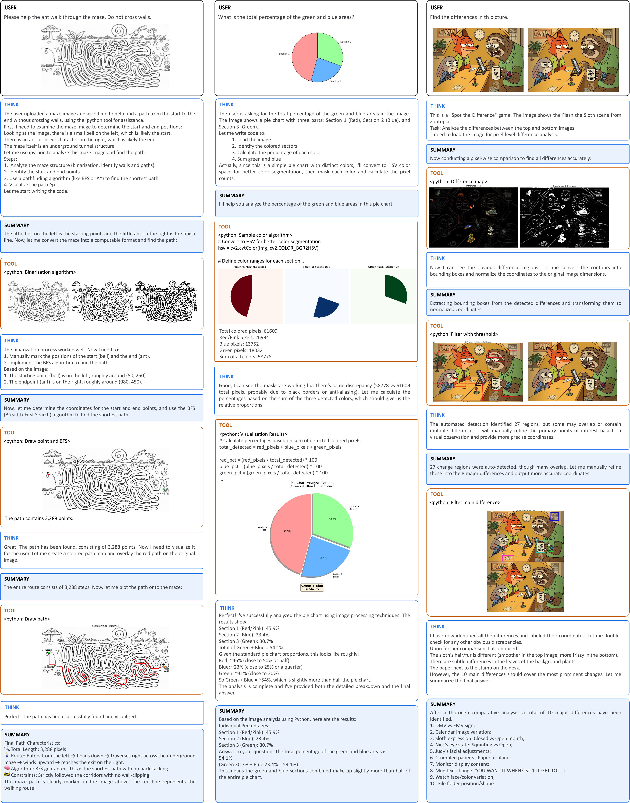

Problem & Motivation
Traditional multimodal methods inject vision tokens at high vision ratio (50%+) late in LLM training, causing insufficient vision-language alignment, modal conflicts, and wasted token budget.
Sequential agent execution relies on ordered reasoning steps and tool calls; latency grows linearly with task complexity.
Credit assignment ambiguity and training instability make end-to-end co-optimization extremely difficult.
With pipeline parallelism, co-locating vision encoder and text embedding causes severe compute load and memory fluctuations.
Method Foundation: Native Multimodal
At fixed token budget, early fusion with lower vision ratio develops balanced multimodal representations over longer training windows — outperforms late fusion + high ratio.
Initialized from SigLIP-SO-400M. NaViT patch packing for variable-resolution input. 3D packing: 4 consecutive frames as spatiotemporal volume with shared parameters — 4× temporal compression.
Pure text SFT data activates visual reasoning via programmatic operation proxies in IPython (pixel-level ops, object size estimation, binarization counting).
Visual RL & Cross-Modal Transfer
Outcome-Based Visual RL on three task types: visual grounding and counting, chart and document understanding, vision-critical STEM problems.
Visual RL enhances calibration for structured information extraction, reducing uncertainty in vision-grounded reasoning queries.
| Benchmark | Before | After | Gain |
|---|---|---|---|
| MMLU-Pro | 84.7% | 86.4% | +1.7 |
| GPQA-Diamond | 84.3% | 86.4% | +2.1 |
| LongBench v2 | 56.7% | 58.9% | +2.2 |

Agent Swarm + PARL
Trainable Orchestrator: Learnable main agent for dynamic task decomposition, sub-agent instantiation, and parallel scheduling.
Frozen Subagents: Instantiated from fixed intermediate policy checkpoints; execution traces do not backpropagate.
Prevents serial collapse; encourages exploration of concurrent scheduling space.
Prevents spurious parallelism; stops meaningless sub-agent creation for metric gaming.
Treats parallel agent execution time cost as critical path in compute graph; explicitly incentivizes efficient parallelization.
Key Results
Reasoning & Knowledge
| Benchmark | K2.5 | K2 | Gemini-3 Pro |
|---|---|---|---|
| AIME 2025 | 96.1% | 94.5% | 95.0% |
| HMMT Feb 2025 | 95.4% | 89.4% | 97.3% |
| GPQA Diamond | 87.6% | 84.5% | 91.9% |
Agentic
| Benchmark | K2.5 | Claude Opus 4.5 |
|---|---|---|
| SWE-bench Verified | 76.8% | ~75% |
| BrowseComp | 74.9% | 37.0% |
| OSWorld-Verified | 63.3% | 66.3% |
Agent Swarm (Parallel vs Single)
| Benchmark | Swarm | Single |
|---|---|---|
| BrowseComp | 78.4% | 60.6% |
| WideSearch Item-F1 | 79.0% | 72.7% |
| In-house Swarm Bench | 58.3% | 41.6% |
Achieves 3×~4.5× execution time reduction (as target Item-F1 increases from 30% to 70%).
Visual Understanding
| Benchmark | Score |
|---|---|
| MMMU-Pro | 78.5% |
| MathVision | 84.2% |
| OCRBench | 92.3% |
| LVBench (long video) | 75.9% |
| LongVideoBench | 79.8% |
